Product Concept / Desktop Hardware
硬盘集成支架
桌面硬件概念设计 / 结构表达 / 使用场景展示
- 项目定位
- 面向桌面工作站的数据存储、硬盘扩展与设备收纳需求。
- 设计重点
- 兼顾数据访问、接口布局、桌面秩序、设备拆装和产品识别。
- 展示内容
- 背景分析、痛点与合理性、草图推导、场景渲染、接口与细节表达。
- 能力体现
- 产品概念定义、形态推导、结构细节表达和硬件使用场景可视化。
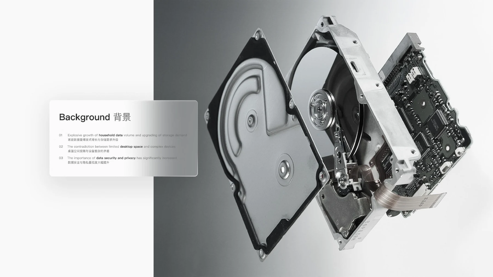
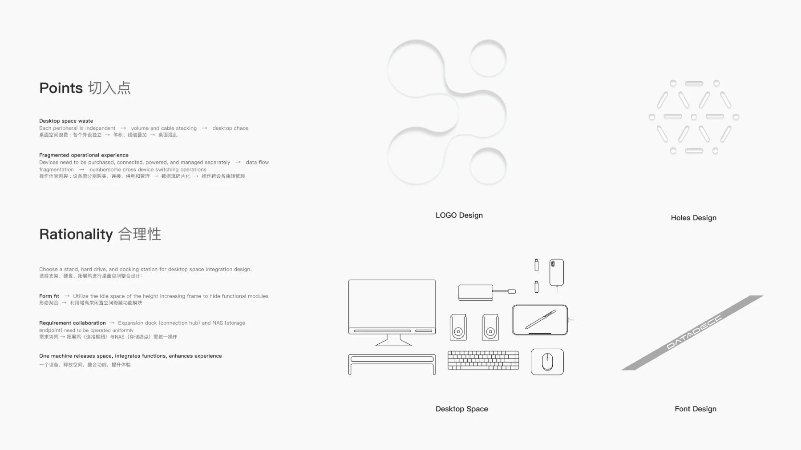
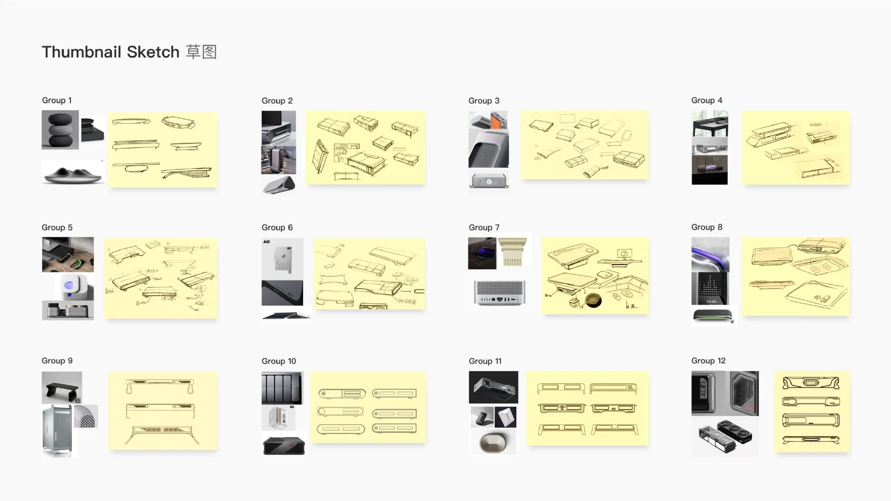
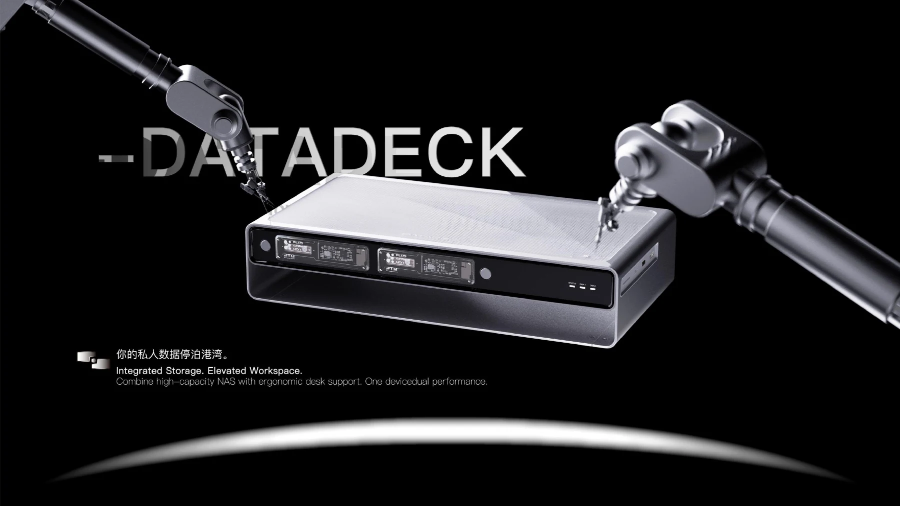
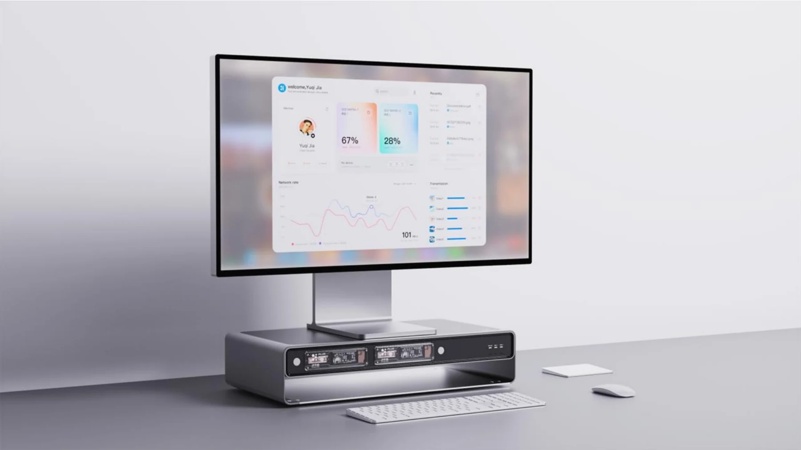
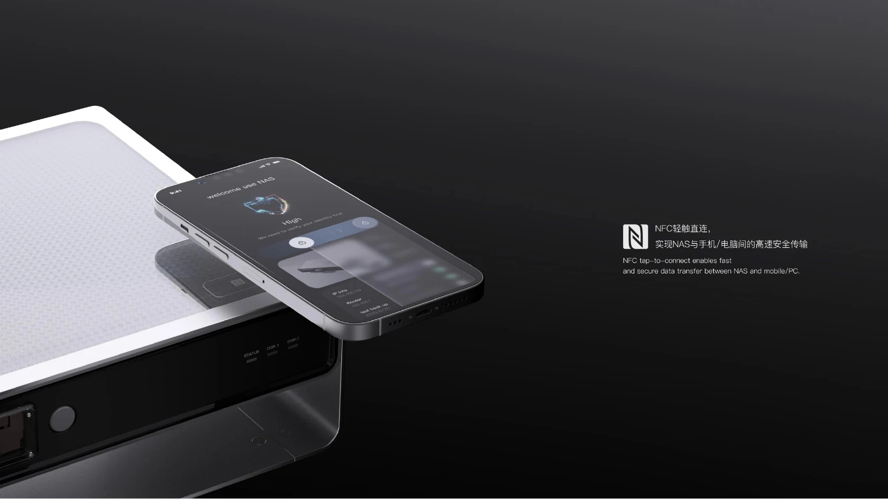
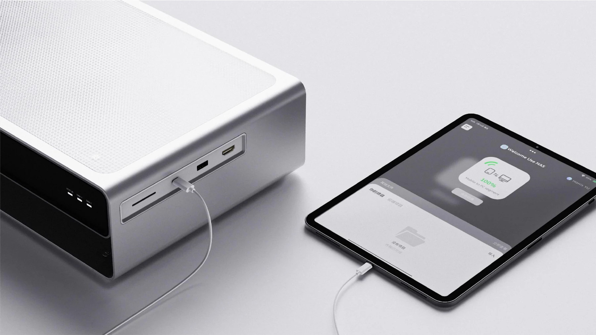
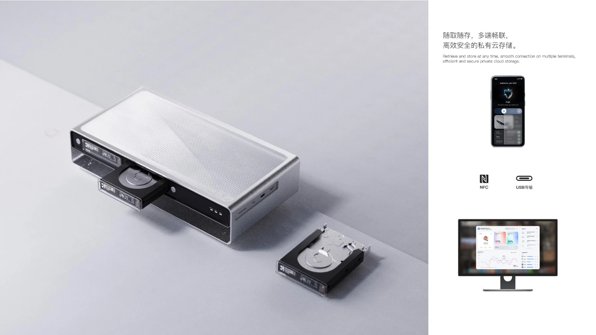
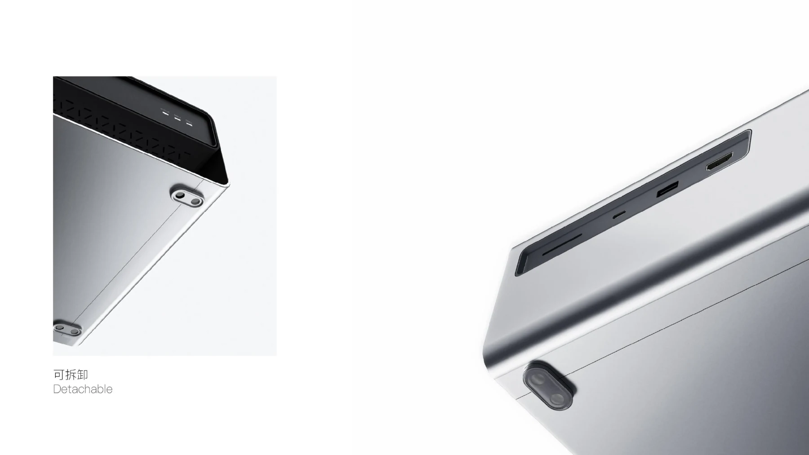
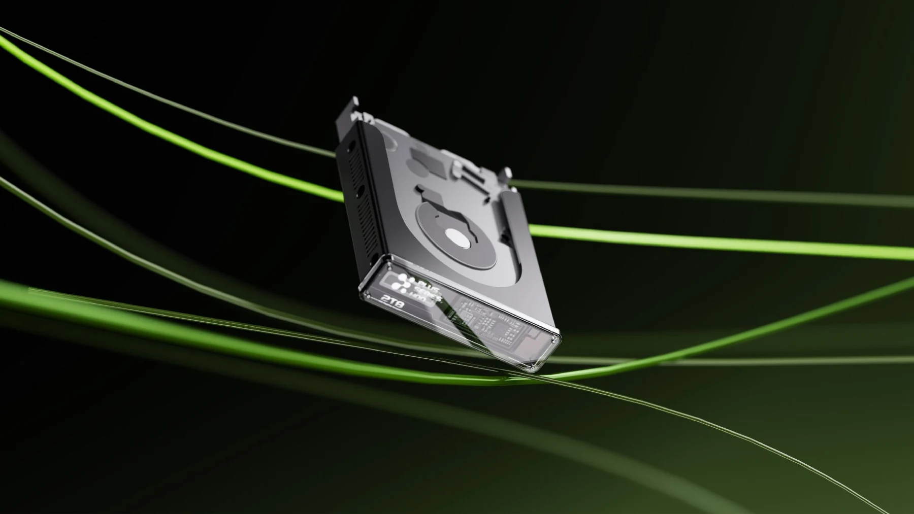
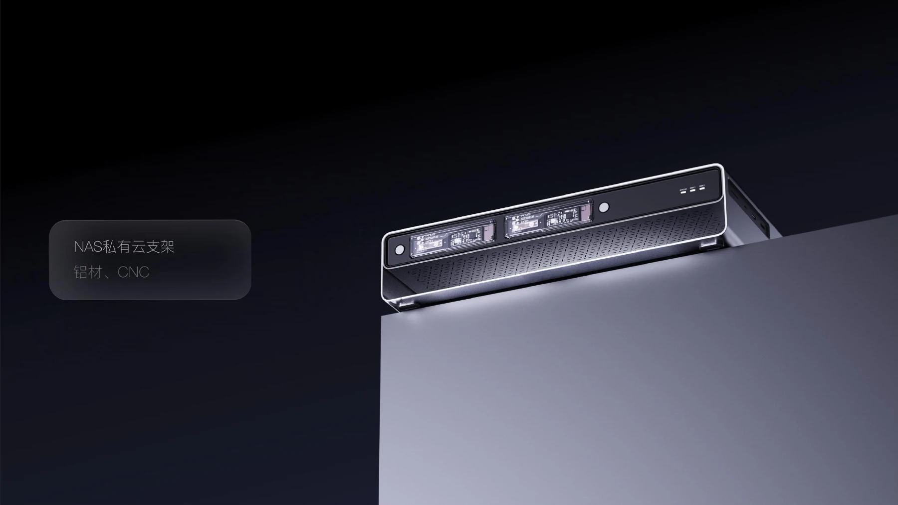
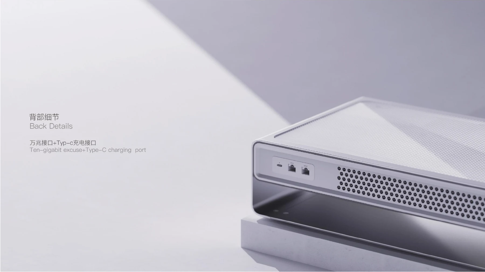